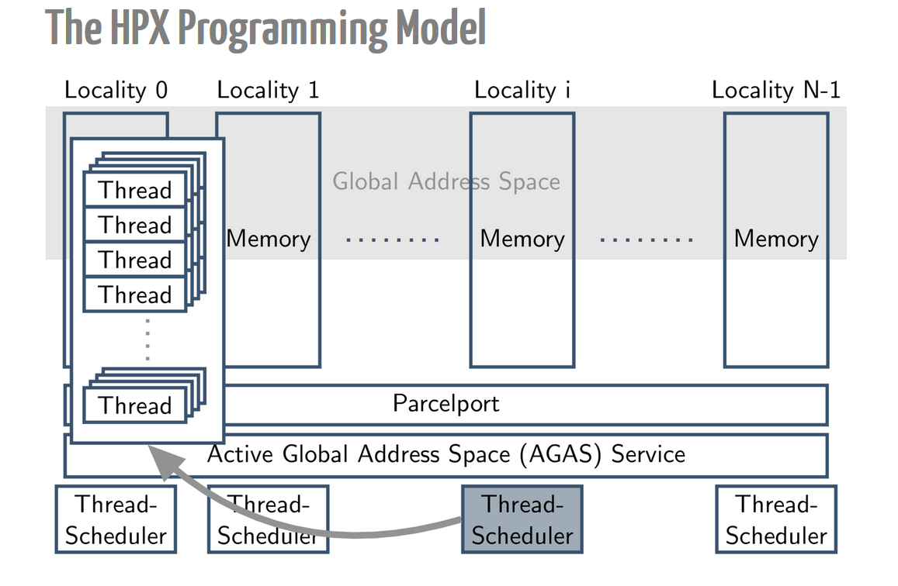
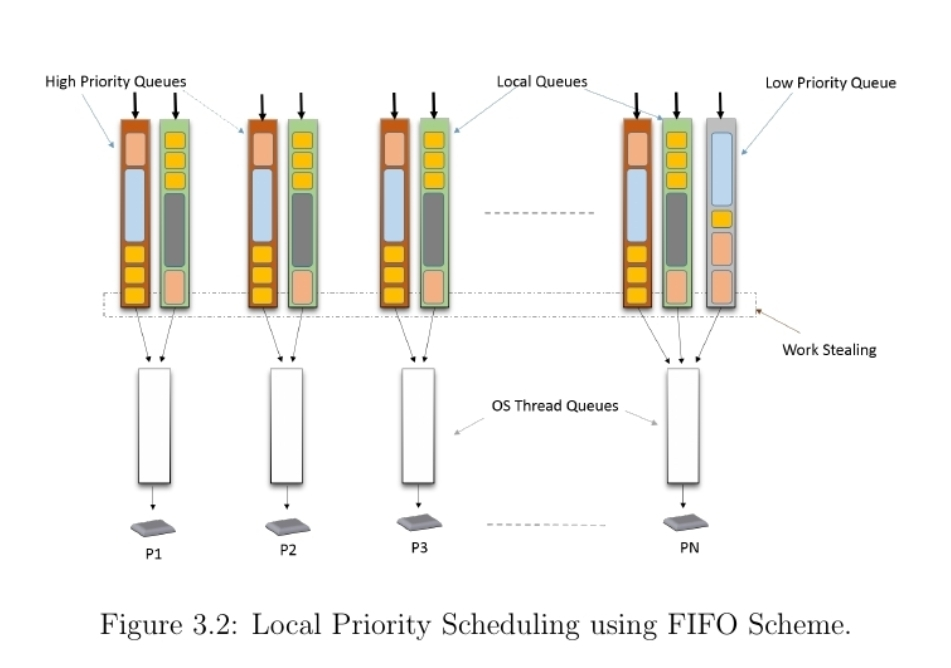
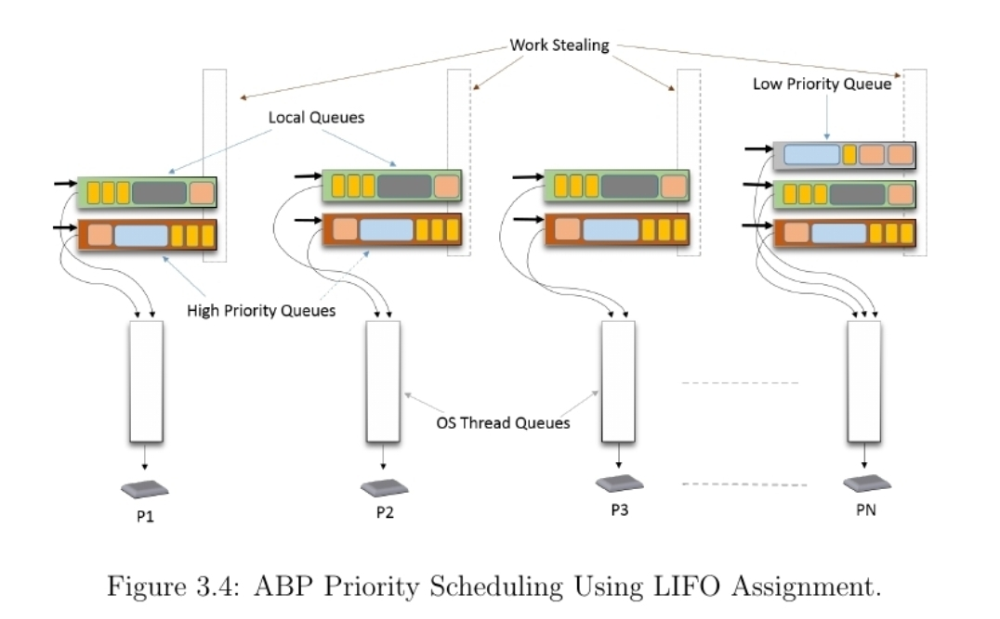
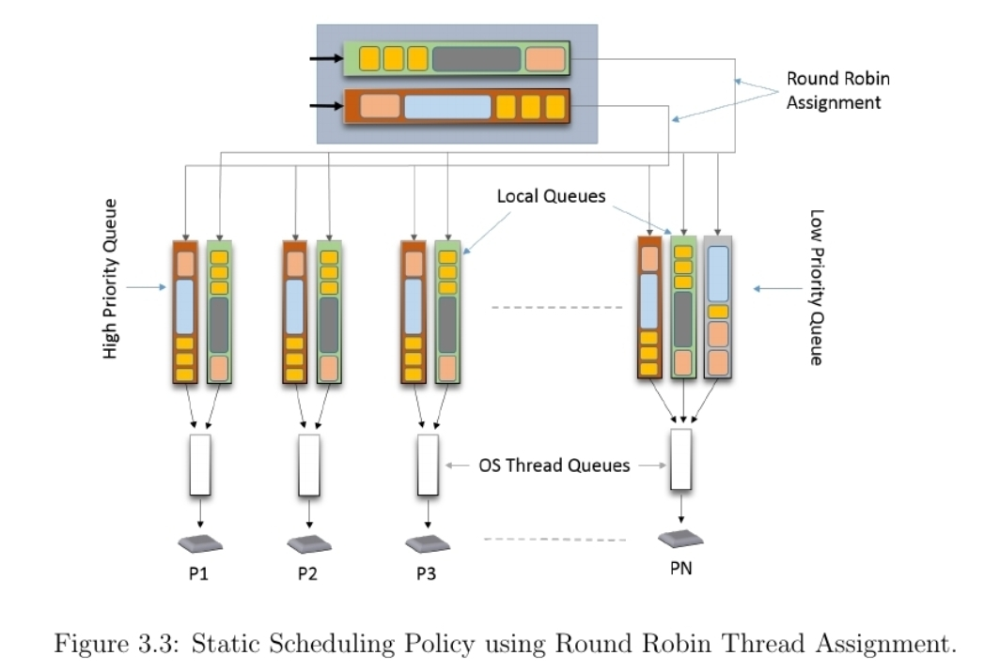
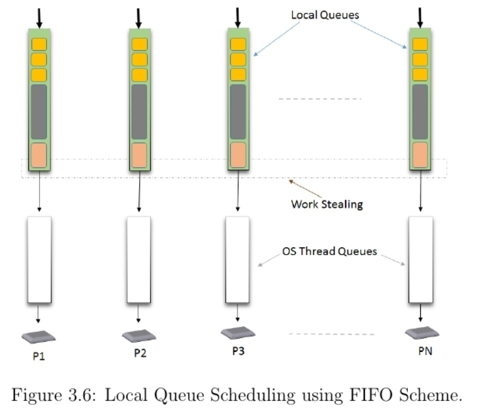
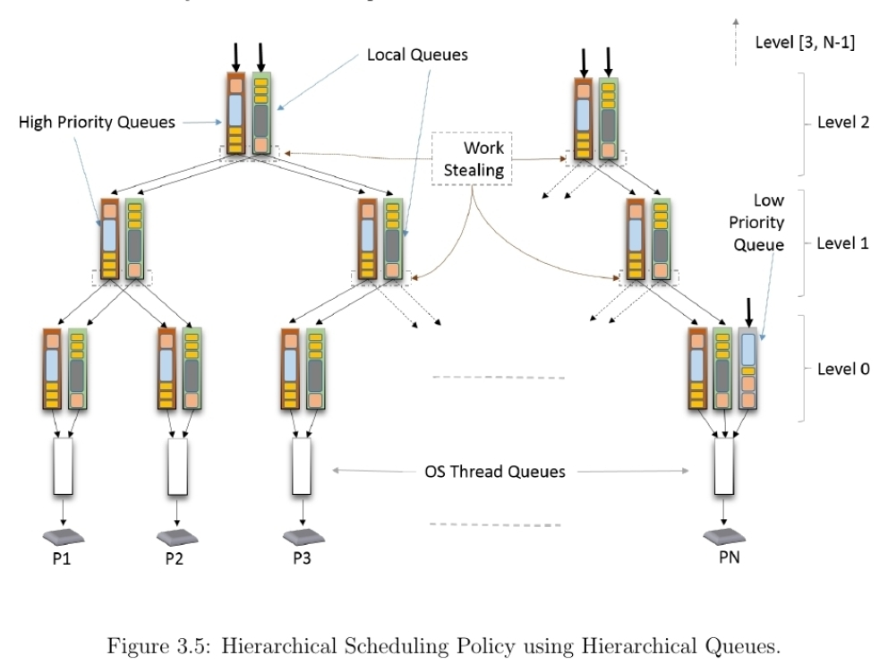

is a data member of thread_pool. Its constructor is called in the constructor of runtime_imp

default or invoke using:
--hpx:queuing=local-priority-fifo (or -qlo)
See Also: periodic_priority_queue_scheduler, static_priority_queue_scheduler
See Also: --hpx:high-priority-threads (set the number)
See Also: several high priority queues (set the number)
See Also: typedef thread_queue< Mutex, PendingQueuing, StagedQueuing, TerminatedQueuing> thread_queue_type;
See Also: typedef thread_queue< Mutex, PendingQueuing, StagedQueuing, TerminatedQueuing> thread_queue_type;
See Also: typedef thread_queue< Mutex, PendingQueuing, StagedQueuing, TerminatedQueuing> thread_queue_type;


invoke using: --hpx:queuing=static-priority (or -qs)
flag to turn on for build: HPX_THREAD_SCHEDULERS=all or HPX_THREAD_SCHEDULERS=static-priority
See Also: local_priority_queue_scheduler
invoke using: --hpx:queuing=periodic-priority (or -qpe)
flag to turn on for build: HPX_THREAD_SCHEDULERS=all or HPX_THREAD_SCHEDULERS=periodic-priority
See Also: local_priority_queue_scheduler

invoke using: --hpx:queuing=local (or -ql)
flag to turn on for build: HPX_THREAD_SCHEDULERS=all or HPX_THREAD_SCHEDULERS=local
See Also: static_queue_scheduler (derived from), throttle_queue_scheduler (derived from)
See Also: typedef thread_queue< Mutex, PendingQueuing, StagedQueuing, TerminatedQueuing> thread_queue_type;
invoke using: --hpx:queuing=static
flag to turn on for build: HPX_THREAD_SCHEDULERS=all or HPX_THREAD_SCHEDULERS=static
See Also: local_queue_scheduler (derived from)
invoke using: --hpx:queuing=abp-priority
flag to turn on for build: HPX_THREAD_SCHEDULERS=all or HPX_THREAD_SCHEDULERS=abp-priority
See Also: local_queue_scheduler (derived from)

invoke using: --hpx:queuing=hierarchy (or -qh)
flag to turn on for build: HPX_THREAD_SCHEDULERS=all or HPX_THREAD_SCHEDULERS=hierarchy
Work stealing is done from the parent queue in that tree.
See Also: typedef std::vector<thread_queue_type*> level_type; typedef std::vector<level_type> tree_type;
See Also: std::vector<thread_queue_type*> queues_, std::vector<thread_queue_type*> queues_, std::vector<thread_queue_type*> high_priority_queues_, thread_queue_type low_priority_queue_, typedef std::vector<thread_queue_type*> level_type; typedef std::vector<level_type> tree_type;
See Also: tree_type tree, typedef thread_queue< Mutex, PendingQueuing, StagedQueuing, TerminatedQueuing> thread_queue_type;
See Also: scheduler_base
(boost:mutex mtx_, boost:condition_variable cond_, boost<atomic<std::uint32_t> wait_count_)
called by thread_pool<Scheduler>::ini
(threads::mask_cref_type get_pu_pask( topology const& topology, std::size_t num_thread) const, std::size_t pet_pu_num(std::size_t num_thread) const, void add_punit(std::size_t virt_core, std::size_t thread_num), std::size_t init( init_affinity_data const& data, topology const& topology))